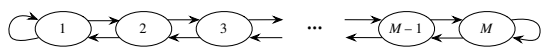
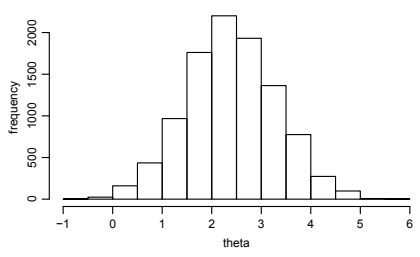
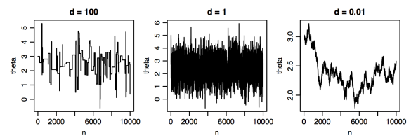
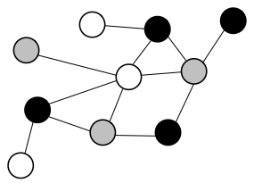
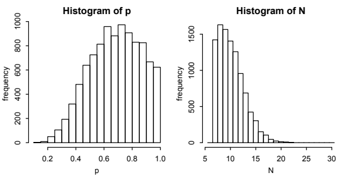

12 마르코프 연쇄 몬테카를로
이 책 전체에서 살펴보았듯이 시뮬레이션은 확률론의 강력한 기법이다. 몬티 홀 문제에서 문을 바꾸는 것이 좋다는 사실을 친구에게 납득시킬 수 없다면, 1초 만에 게임을 수천 번 시뮬레이션하여 문을 바꾸면 약 \(2/3\)의 확률로 성공한다는 것을 직접 보여줄 수 있다. 확률변수 \(X\)의 평균과 분산을 계산하는 방법은 모르지만 그 분포에서 독립이고 동일한 분포를 따르는 표본 \(X_1,X_2,\ldots,X_n\)을 생성할 수 있다면, 생성한 표본의 표본평균과 표본분산으로 실제 평균과 분산을 근사할 수 있다.
\[ E(X)\approx\frac1n(X_1+\cdots+X_n)=\bar X_n,\qquad \operatorname{Var}(X)\approx\frac1{n-1}\sum_{j=1}^n(X_j-\bar X_n)^2. \]
큰 수의 법칙에 따르면 \(n\)이 크면 이 근사는 정확해진다. 계산하기 어려울 수도 있는 합이나 적분을 힘들게 구하는 대신 컴퓨터를 더 오래 실행하여 \(n\)을 늘리기만 하면 점점 더 좋은 근삿값을 얻을 수 있다. 10장에서 설명했듯이 어떤 양을 근사하기 위해 무작위 값을 생성하는 이러한 시뮬레이션 방식을 몬테카를로 방법이라고 한다.
위 몬테카를로 아이디어의 큰 한계는 \(X_1,X_2,\ldots,X_n\)을 생성하는 방법을 알아야 한다는 것이다. \(n\)을 크게 만들고 싶으므로 효율적인 생성 방법이면 더욱 좋다. 예를 들어 \(0<x<1\)에서 확률밀도함수 \(f\)가
\[ f(x)\propto x^{3.1}(1-x)^{4.2} \]
이고 그 밖에서는 0인 연속분포에서 무작위 표본을 생성하고 싶다고 하자. 밀도함수를 바라보는 것만으로는 그 밀도를 가진 확률변수를 얻는 방법이 곧바로 떠오르지 않는다. 이 경우에는 \(\operatorname{Beta}(4.1,5.2)\) 분포의 확률밀도함수라는 것을 알아볼 수 있으므로, \(\operatorname{Unif}(0,1)\) 확률변수를 사용할 수 있다면 이론적으로 균등분포의 보편성을 이용할 수 있다. 안타깝게도 베타분포의 누적분포함수를 구하기는 어렵고 그 역함수를 구하기는 더욱 어렵다. 베타분포 시뮬레이션 문제는 예제 12.1.4에서 더 자세히 살펴본다.
물론 실제 응용에서 나타나는 분포들은 베타분포보다 훨씬 복잡한 경우가 많다. 베타분포에서는 정규화 상수를 감마함수로 표현할 수 있다. 그러나 과학적으로 관심 있는 다른 많은 분포에서는 확률밀도함수나 확률질량함수의 정규화 상수를 알지 못하며, 가장 빠른 컴퓨터와 가장 정교한 수학 기법으로도 구할 수 없다.
이 장에서는 마르코프 연쇄를 이용해 복잡한 분포에서 표본을 생성할 수 있게 해 주는 강력한 알고리즘들의 집합인 마르코프 연쇄 몬테카를로(MCMC)를 소개한다. MCMC의 발전은 고차원의 결합분포를 포함하여 시뮬레이션할 수 있는 분포의 범위를 크게 넓힘으로써 통계학과 과학 계산에 혁명을 가져왔다. 기본 아이디어는 관심 있는 분포가 정상분포가 되도록 마르코프 연쇄를 직접 만드는 것이다.
앞 장에서는 전이행렬 \(Q\)가 주어진 마르코프 연쇄를 살펴보고 연쇄의 정상분포 \(\mathbf{s}\)를 구하려 했다. 이 장에서는 반대로, 시뮬레이션하고자 하는 분포 \(\mathbf{s}\)에서 출발하여 정상분포가 \(\mathbf{s}\)인 마르코프 연쇄를 설계한다. 이렇게 설계한 연쇄를 아주 오랫동안 실행하면 연쇄의 분포는 원하는 \(\mathbf{s}\)에 가까워진다.
하지만 원하는 정상분포를 가진 전이행렬 \(Q\)를 만드는 것이 가능할까? 가능하더라도 이 문제를 푸는 것이 그 분포에서 무작위 표본을 생성하는 원래 문제보다 더 쉬울까? 놀랍도록 넓은 범위에서 MCMC는 원하는 정상분포를 가진 마르코프 연쇄를 그 분포의 정규화 상수를 알 필요 없이 쉽게 설명할 수 있는 방법으로 만들 수 있음을 보여준다!
오늘날 MCMC는 생물과학, 자연과학, 물리과학의 수많은 문제에 적용되고 있으며 다양한 MCMC 알고리즘이 개발되었다. 여기서는 가장 중요하고 널리 쓰이는 두 알고리즘인 메트로폴리스–헤이스팅스 알고리즘과 깁스 표본추출을 소개한다. MCMC는 규모가 방대하고 계속 성장하는 통계 계산 분야이다. 이론, 방법, 응용에 관해서는 Brooks, Gelman, Jones와 Meng [2]을 참고하라.
12.1 메트로폴리스–헤이스팅스
메트로폴리스–헤이스팅스 알고리즘은 관심 있는 상태공간 위의 임의의 기약 마르코프 연쇄에서 출발하여, 원하는 정상분포를 가진 새로운 마르코프 연쇄로 수정하는 일반적인 방법이다. 이 수정은 원래 연쇄에 선택성을 도입한다. 이동은 원래 연쇄에 따라 제안하지만 그 제안이 수락될 수도 있고 거절될 수도 있다. 예를 들어 원래 연쇄가 ‘보스턴’이라는 상태에서 ‘샌프란시스코’로 전이하려 한다고 하자. 그러면 새 연쇄에서는 제안을 수락하고 샌프란시스코로 가거나 제안을 거절하고 다음 단계에도 보스턴에 머문다. 제안의 수락 확률을 신중하게 선택하면 이 간단한 수정으로 새 연쇄가 원하는 정상분포를 갖게 된다.
옮긴이 주: 원하는 정상분포가 존재한다는 사실만으로 임의의 시작점에서 그 분포로 수렴하는 것은 아니다. 유한 상태공간에서 수렴하려면 수정된 연쇄의 기약성과 비주기성도 확인해야 한다. 원래 제안 연쇄가 기약이라는 사실만으로 수정된 연쇄의 기약성이 보장되지는 않는다.
알고리즘 12.1.1 (메트로폴리스–헤이스팅스). \(\mathbf{s}=(s_1,\ldots,s_M)\)을 상태공간 \(\{1,\ldots,M\}\)에서 원하는 정상분포라 하자. 모든 \(i\)에 대해 \(s_i>0\)이라고 가정한다. 그렇지 않다면 \(s_i=0\)인 상태 \(i\)를 상태공간에서 삭제하면 된다. \(P=(p_{ij})\)를 상태공간 \(\{1,\ldots,M\}\) 위의 마르코프 연쇄의 전이행렬이라 하자. 직관적으로 \(P\)는 실행하는 방법은 알지만 원하는 정상분포는 갖지 않은 마르코프 연쇄이다.
우리의 목표는 \(P\)를 수정하여 정상분포가 \(\mathbf{s}\)인 마르코프 연쇄 \(X_0,X_1,\ldots\)을 만드는 것이다. 이를 위한 메트로폴리스–헤이스팅스 알고리즘을 제시한다. 임의의 상태 \(X_0\)에서 시작하고(무작위 또는 결정적으로 선택), 새 연쇄가 현재 \(X_n\)에 있다고 하자. 새 연쇄를 한 번 이동시키려면 다음을 수행한다.
\(X_n=i\)이면 원래 전이행렬 \(P\)의 \(i\)번째 행에 있는 전이확률을 이용해 새로운 상태 \(j\)를 제안한다.
수락 확률을 계산한다.
\[a_{ij}=\min\left(\frac{s_jp_{ji}}{s_ip_{ij}},1\right).\]
앞면이 나올 확률이 \(a_{ij}\)인 동전을 던진다.
앞면이면 제안을 수락하여 \(j\)로 이동하고 \(X_{n+1}=j\)로 둔다. 그렇지 않으면 제안을 거절하여 \(i\)에 머물고 \(X_{n+1}=i\)로 둔다.
즉 메트로폴리스–헤이스팅스 연쇄는 원래의 전이확률 \(p_{ij}\)를 이용해 다음에 갈 곳을 제안한 다음 확률 \(a_{ij}\)로 그 제안을 수락하며, 거절하면 현재 상태에 머문다. 이 알고리즘의 특히 좋은 점은 \(\mathbf{s}\)의 정규화 상수를 알 필요가 없다는 것이다. 어차피 \(s_j/s_i\)에서 상수가 소거되기 때문이다. 예를 들어 어떤 문제에서는 모든 상태에 걸친 균등분포, 즉 \(\mathbf{s}=(1/M,1/M,\ldots,1/M)\)을 정상분포로 원하지만 상태의 수 \(M\)이 크고 알려져 있지 않아 \(M\)을 구하는 것이 매우 어려운 경우가 있다. 다행히 \(M\)에 관계없이 \(s_j/s_i=1\)이므로 단순히 \(\mathbf{s}\propto(1,1,\ldots,1)\)이라고 쓰고 \(M\)을 몰라도 \(a_{ij}\)를 계산할 수 있다.
알고리즘을 실행할 때 \(a_{ij}\)의 분모에 있는 \(p_{ij}\)는 결코 0이 아니다. \(p_{ij}=0\)이면 원래 연쇄가 \(i\)에서 \(j\)로 가는 것을 결코 제안하지 않기 때문이다. 또한 \(p_{ii}>0\)이면 제안된 \(j\)가 현재 상태 \(i\)와 같을 수 있는데, 이 경우 제안을 수락하든 거절하든 연쇄는 \(i\)에 머문다. (\(i\)에 머물자는 제안을 거절하면서도 거기에 머무는 것은 외출 금지 처분을 받은 아이가 ‘그래, 내 방에 있을 거야. 하지만 시켜서 그러는 건 아니야!’라고 말하는 것과 같다.)
이제 메트로폴리스–헤이스팅스 연쇄가 정상분포 \(\mathbf{s}\)에 대해 가역적임을 보이자.
증명. \(Q\)를 메트로폴리스–헤이스팅스 연쇄의 전이행렬이라 하자. 모든 \(i,j\)에 대해 가역성 조건 \(s_iq_{ij}=s_jq_{ji}\)만 확인하면 된다. \(i=j\)이면 명백하므로 \(i\ne j\)라고 하자. \(q_{ij}>0\)이면 \(p_{ij}>0\)이고(연쇄가 \(i\)에서 \(j\)로 가는 것을 제안할 수도 없다면 그곳에 갈 수 없다), \(p_{ji}>0\)이다(그렇지 않으면 수락 확률이 0일 것이다). 반대로 \(p_{ij}>0\)이고 \(p_{ji}>0\)이면 \(q_{ji}>0\)이다. 따라서 \(q_{ij}\)와 \(q_{ji}\)는 모두 0이거나 모두 0이 아니다. 둘 다 0이 아니라고 가정해도 된다. 그러면
\[q_{ij}=p_{ij}a_{ij}\]
이다. \(i\)에서 출발해 \(j\)에 도달하는 유일한 방법은 먼저 그 이동을 제안하고 다음에 제안을 수락하는 것이기 때문이다. 먼저 \(s_jp_{ji}\leq s_ip_{ij}\)인 경우를 생각하자. 이때
\[a_{ij}=\frac{s_jp_{ji}}{s_ip_{ij}},\qquad a_{ji}=1,\]
이므로
\[s_iq_{ij}=s_ip_{ij}a_{ij}=s_ip_{ij}\frac{s_jp_{ji}}{s_ip_{ij}}=s_jp_{ji}=s_jp_{ji}a_{ji}=s_jq_{ji}.\]
대칭적으로 \(s_jp_{ji}>s_ip_{ij}\)이면 앞의 계산에서 \(i\)와 \(j\)의 역할을 바꾸어 다시 \(s_iq_{ij}=s_jq_{ji}\)를 얻는다. 가역성 조건이 성립하므로 \(\mathbf{s}\)는 전이행렬이 \(Q\)인 연쇄의 정상분포이다. \(\blacksquare\)
주의 12.1.2. 메트로폴리스–헤이스팅스 알고리즘은 원하는 정상분포를 가진 마르코프 연쇄를 만드는 매우 일반적인 방법이다. 위 정식화에서 \(\mathbf{s}\)와 \(P\)는 모두 매우 일반적이며 같은 상태공간 위에 있다는 것 외에는 둘 사이의 관계를 규정하지 않았다. 그러나 실제로는 제안분포의 선택이 매우 중요하다. 선택에 따라 연쇄가 정상분포에 수렴하는 속도가 크게 달라질 수 있기 때문이다.
좋은 제안분포를 선택하는 방법은 복잡한 주제이므로 여기서는 자세히 다루지 않는다. 직관적으로 수락률이 매우 낮은 제안분포는 연쇄가 거의 움직이지 않으므로 수렴이 느리다. 하지만 수락률이 높다고 반드시 이상적인 것도 아니다. 연쇄가 작고 소극적인 제안을 하는 경향이 있음을 나타낼 수 있기 때문이다. 상태공간이 크면 그런 연쇄가 전체 공간을 탐색하는 데 매우 오래 걸린다.
다음은 메트로폴리스–헤이스팅스 알고리즘을 사용하여 분포에서 표본을 생성하는 예제들이다.
예제 12.1.3 (지프분포 시뮬레이션). \(M\geq2\)를 정수라 하자. 확률변수 \(X\)의 확률질량함수가 \(k=1,2,\ldots,M\)에 대해
\[P(X=k)=\frac{1/k^a}{\sum_{j=1}^M(1/j^a)}\]
이고 그 밖에서는 0이면 \(X\)는 모수 \(a>0\)인 지프분포를 따른다. 이 분포는 언어학에서 단어의 빈도를 연구할 때 널리 쓰인다.
정상분포가 지프분포이고 모든 \(n\)에 대해 \(|X_{n+1}-X_n|\leq1\)인 마르코프 연쇄 \(X_0,X_1,\ldots\)을 만들어라. 답에는 연쇄의 각 이동을 얻는 방법, 즉 각 \(n\)에 대해 \(X_n\)에서 \(X_{n+1}\)로 전이하는 방법을 간단하고 정확하게 설명해야 한다.
풀이. 제안분포를 구한 후 메트로폴리스–헤이스팅스 알고리즘을 사용할 수 있다. 가능한 제안분포는 많지만 간단한 선택은 \(\{1,2,\ldots,M\}\) 위의 다음과 같은 랜덤워크이다. \(i\ne1\), \(i\ne M\)인 상태 \(i\)에서는 각각 확률 \(1/2\)로 상태 \(i-1\) 또는 \(i+1\)로 이동한다. 상태 1에서는 각각 확률 \(1/2\)로 그곳에 머물거나 상태 2로 이동한다. 상태 \(M\)에서는 각각 확률 \(1/2\)로 그곳에 머물거나 상태 \(M-1\)로 이동한다. 이 연쇄는 아래 그림과 같다.

\(P\)를 이 연쇄의 전이행렬이라 하자. \(P\)는 대칭행렬이므로 명제 11.4.3을 적용할 수 있고, \(P\)의 정상분포는 균등분포이다. 메트로폴리스–헤이스팅스를 이용하면 \(P\)를 정상분포가 지프분포인 연쇄로 바꿀 수 있다.
\(X_0\)을 임의의 시작 상태로 두고 연쇄 \(X_0,X_1,\ldots\)을 다음과 같이 생성한다. 연쇄가 현재 상태 \(i\)에 있다면 다음을 수행한다.
- 제안 연쇄 \(P\)에 따라 제안 상태 \(j\)를 생성한다.
- 확률 \(\min(i^a/j^a,1)\)로 제안을 수락한다. 수락하면 \(j\)로 이동하고 그렇지 않으면 \(i\)에 머문다.
이 연쇄는 구현하기 쉽고 한 번 이동하는 데 계산이 거의 필요하지 않다. 연쇄를 실행하는 데 정규화 상수 \(\sum_{j=1}^M(1/j^a)\)가 필요하지 않음에 주목하자. \(\square\)
예제 12.1.4 (베타분포 시뮬레이션). 이제 장의 시작에서 소개한 베타분포 시뮬레이션 문제로 돌아가자. \(W\sim\operatorname{Beta}(a,b)\)를 생성하고 싶지만 R의 rbeta 명령을 모른다고 하자. 대신 독립이고 동일한 분포를 따르는 \(\operatorname{Unif}(0,1)\) 확률변수들을 이용할 수 있다.
\(a\)와 \(b\)가 양의 정수일 때 이야기와 균등분포의 보편성을 이용하여 \(W\)를 어떻게 정확하게 생성할 수 있는가?
\(a\)와 \(b\)가 임의의 양의 실수일 때 상태공간 \((0,1)\) 위의 마르코프 연쇄를 이용하여 대략 \(\operatorname{Beta}(a,b)\) 분포를 따르는 \(W\)를 어떻게 생성할 수 있는가?
풀이. (a) 베타분포에 균등분포의 보편성을 직접 적용하기는 어려우므로 먼저 은행–우체국 이야기를 이용하자. \(X\sim\operatorname{Gamma}(a,1)\)과 \(Y\sim\operatorname{Gamma}(b,1)\)가 독립이면 \(X/(X+Y)\sim\operatorname{Beta}(a,b)\)이다. 따라서 감마분포를 시뮬레이션할 수 있다면 베타분포도 시뮬레이션할 수 있다!
\(X\sim\operatorname{Gamma}(a,1)\)을 시뮬레이션하려면 독립이고 동일한 \(\operatorname{Expo}(1)\) 분포를 따르는 \(X_j\)들의 합 \(X_1+X_2+\cdots+X_a\)를 사용할 수 있다. 마찬가지로 \(Y\sim\operatorname{Gamma}(b,1)\)은 독립이고 동일한 \(\operatorname{Expo}(1)\) 확률변수 \(b\)개의 합으로 시뮬레이션할 수 있다. 마지막으로 \(\operatorname{Expo}(1)\)의 누적분포함수의 역함수와 균등분포의 보편성을 이용하면 \(U\sim\operatorname{Unif}(0,1)\)에 대해 \(-\log(1-U)\sim\operatorname{Expo}(1)\)이므로 필요한 만큼 \(\operatorname{Expo}(1)\) 확률변수를 쉽게 만들 수 있다.
- 메트로폴리스–헤이스팅스 알고리즘을 사용하자. 지금까지는 유한 상태공간에 대해서만 이 알고리즘을 소개했지만 무한 상태공간에서도 아이디어는 비슷하다. 사용할 수 있는 간단한 제안 연쇄는 독립적인 \(\operatorname{Unif}(0,1)\) 확률변수들로 이루어진다. 즉 구간 \((0,1)\)에서 제안되는 상태는 항상 현재 상태와 독립인 새로운 \(\operatorname{Unif}(0,1)\) 값이다. 이렇게 얻는 메트로폴리스–헤이스팅스 연쇄를 독립 표본추출기라고 한다.
\(W_0\)을 임의의 시작 상태로 두고 \(W_0,W_1,\ldots\)을 다음과 같이 생성한다. 현재 상태가 \(w\)라면 다음을 수행한다.
- \(\operatorname{Unif}(0,1)\) 확률변수를 추출하여 제안값 \(u\)를 생성한다.
- 확률 \(\min\left(\frac{u^{a-1}(1-u)^{b-1}}{w^{a-1}(1-w)^{b-1}},1\right)\)로 제안을 수락한다. 수락하면 \(u\)로 이동하고, 그렇지 않으면 \(w\)에 머문다.
이번에도 연쇄를 실행하는 데 정규화 상수는 필요하지 않았다. 수락 확률을 구할 때 원하는 정상분포인 \(\operatorname{Beta}(a,b)\)의 확률밀도함수가 \(\mathbf{s}\)의 역할을 하고, 제안값이 현재 상태와 독립인 \(\operatorname{Unif}(0,1)\) 확률변수이므로 그 확률밀도함수가 \(p_{ij}\)와 \(p_{ji}\)의 역할을 한다.
마르코프 연쇄를 실행하면 \(n\)이 클 때 \(W_n,W_{n+1},W_{n+2},\ldots\)은 대략 \(\operatorname{Beta}(a,b)\) 분포를 따른다. 이들은 독립이고 동일한 표본이 아니라 상관된 확률변수임에 주의하자. \(\square\)
주의 12.1.5 (MCMC는 상관된 표본을 만든다). 몬테카를로 계산을 위해 마르코프 연쇄 \(X_0,X_1,\ldots\)을 실행할 때 얼마나 오래 실행해야 하는가는 중요한 문제이다. 한 가지 이유는 대개 시점 \(n\)에서 연쇄의 분포가 정상분포에 얼마나 가까운지 알기 어렵기 때문이다. 또 다른 문제는 \(X_0,X_1,\ldots\)이 일반적으로 서로 상관되어 있다는 것이다. 어떤 연쇄는 상태공간 전체를 탐색하기보다 특정 영역에 갇히는 경향이 있다. 연쇄가 쉽게 갇힌다면 \(X_n\)과 \(X_{n+1}\) 사이에 강한 양의 상관관계가 있을 수 있다. 시차 \(k\)의 자기상관은 \(n\)이 커질 때 \(X_n\)과 \(k\)단계 뒤의 값 \(X_{n+k}\) 사이의 상관계수의 극한이다. \(k\)가 커질 때 시차 \(k\)의 자기상관이 빠르게 0에 가까워지는 것이 바람직하다. 자기상관이 높으면 몬테카를로 근삿값의 분산이 큰 경향이 있다.
연쇄를 얼마나 오래 실행할지 분석하고 충분히 오래 실행했는지 진단하는 방법을 찾는 것은 활발한 연구 분야이다. 일반적인 조언으로는 연쇄를 아주 많은 단계 동안 실행하고 서로 다른 출발점에서 시작한 연쇄들을 시도하여 결과가 얼마나 안정적인지 살펴보는 것이 있다.
메트로폴리스–헤이스팅스는 상태공간이 엄청나게 클 때에도 유용한 경우가 많다. 암호 해독처럼 처음에는 분포를 시뮬레이션하는 것과 아무 관계가 없어 보이는 문제에도 유용할 수 있다.
예제 12.1.6 (암호 해독). 최근 마르코프 연쇄가 암호 해독에 적용되었으며, 이 예제에서는 그 한 가지 방법을 소개한다. (이런 응용에 관한 자세한 내용은 Diaconis [6]과 Chen 및 Rosenthal [3]을 참조하라.) 치환 암호는 a부터 z까지의 문자들에 대한 순열 \(g\)로서, 메시지의 각 문자 \(\alpha\)를 \(g(\alpha)\)로 바꾸어 암호화한다. 예를 들어 \(g\)가 다음 순열로 주어졌다고 하자.
abcdefghijklmnopqrstuvwxyz
zyxwvutsrqponmlkjihgfedcba두 번째 행은 \(g(a),g(b),\ldots,g(z)\)를 나열한다. 이 경우 ‘statistics’는 ‘hgzgrhgrxh’로 암호화된다. (원한다면 대문자, 공백, 문장부호도 포함할 수 있다.) 상태공간은 a부터 z까지의 문자의 순열 전체로, 그 수는 \(26!\approx4\cdot10^{26}\)이다. 이는 엄청나게 큰 공간이다. 각 순열로 텍스트를 해독해 보아야 하고 나노초마다 한 순열을 처리할 수 있다 해도 모든 순열을 살펴보는 데 120억 년 이상 걸린다. 따라서 모든 순열을 하나씩 살펴보는 무차별 탐색은 불가능하다. 대신 무작위 순열들을 살펴보자.
- 1부터 26 사이에서 서로 다른 두 위치를 무작위로 선택해 두 번째 행의 해당 성분들을 서로 바꾸는 마르코프 연쇄를 생각하자. 예를 들어 7과 20을 선택하면
abcdefghijklmnopqrstuvwxyz
zyxwvutsrqponmlkjihgfedcba가 다음과 같이 바뀐다.
abcdefghijklmnopqrstuvwxyz
zyxwvugsrqponmlkjihtfedcba모든 \(g,h\)에 대해 순열 \(g\)에서 순열 \(h\)로 한 단계에 이동할 확률을 구하고, 이 연쇄의 정상분포를 구하라.
- 각 순열 \(g\)에 양의 ‘점수’ \(s(g)\)를 부여하는 체계가 있다고 하자. 직관적으로 이는 사용된 암호가 \(g\)일 때 관찰된 암호문을 얻을 가능성의 척도일 수 있다. 메트로폴리스–헤이스팅스 알고리즘을 이용해 정상분포가 모든 점수 \(s(g)\)의 목록에 비례하는 마르코프 연쇄를 만들어라.
풀이. (a) 두 번째 행의 성분 두 개를 서로 바꾸어 \(g\)에서 \(h\)를 얻을 수 없다면 한 단계에 \(g\)에서 \(h\)로 갈 확률은 0이다. 그렇게 \(h\)를 얻을 수 있다면 가능한 교환은 \(\binom{26}{2}\)개이고 모두 같은 확률이므로 그 확률은 \(1/\binom{26}{2}\)이다.
충분히 많은 교환을 수행하면 어느 순열에서든 다른 모든 순열로 갈 수 있으므로 이 마르코프 연쇄는 기약이다. (카드 두 장씩 교환하여 카드 한 벌의 순서를 바꾼다고 생각해 보자. 이를 충분히 반복하면 카드를 원하는 어떤 순서로든 배열할 수 있다.) \(p(g,h)\)를 \(g\)에서 \(h\)로 가는 전이확률이라 하면 \(p(g,h)=p(h,g)\)임에 주목하자. 전이행렬이 대칭이므로 정상분포는 a부터 z까지 문자의 \(26!\)개 순열 전체에 걸친 균등분포이다.
옮긴이 주: 매번 두 문자를 교환하는 제안 연쇄는 주기가 2이다. 메트로폴리스–헤이스팅스에서 모든 제안이 항상 수락되는 경우에도 주기가 남으므로 임의의 초기분포에서 수렴한다고 단정할 수 없다. 일정한 양의 확률로 제자리에 머무는 단계를 추가하면 이 주기성을 없앨 수 있다.
- 제안 연쇄로 (a)의 연쇄를 사용한다. 임의의 상태 \(g\)에서 출발하여 (a)의 연쇄로 제안 \(h\)를 생성한다. 앞면이 나올 확률이 \(\min(s(h)/s(g),1)\)인 동전을 던진다. 앞면이면 \(h\)로 이동하고 뒷면이면 \(g\)에 머문다.
원하는 정상분포를 갖는다는 것을 증명하기 위해 알고리즘 12.1.1의 일반적인 증명을 이용하거나 가역성 조건을 직접 확인할 수 있다. 연습을 위해 후자를 택하자. 수정된 연쇄에서 \(g\)에서 \(h\)로 가는 전이확률을 \(q(g,h)\)라 할 때, 모든 \(g,h\)에 대해 \(s(g)q(g,h)=s(h)q(h,g)\)가 필요하다. \(g=h\) 또는 \(q(g,h)=0\)이면 식은 명백히 성립하므로 \(g\ne h\)이고 \(q(g,h)\ne0\)이라 하자. (a)의 전이확률을 \(p(g,h)\)라 하자. 이는 \(g\)에 있을 때 \(h\)를 제안할 확률이다. 먼저 \(s(g)\leq s(h)\)이면 \(q(g,h)=p(g,h)\)이고
\[q(h,g)=p(h,g)\frac{s(g)}{s(h)}=p(g,h)\frac{s(g)}{s(h)}=q(g,h)\frac{s(g)}{s(h)},\]
따라서 \(s(g)q(g,h)=s(h)q(h,g)\)이다. 이제 \(s(h)<s(g)\)인 경우를 생각하자. \(g\)와 \(h\)의 역할을 바꾸는 대칭적인 논증으로 다시 \(s(g)q(g,h)=s(h)q(h,g)\)를 얻는다. 따라서 \(g\)의 정상확률은 점수 \(s(g)\)에 비례한다.
다시 말해 메트로폴리스–헤이스팅스 알고리즘을 사용하여 장기적으로 모든 암호를 같은 확률로 방문하는 마르코프 연쇄에서 출발해, 정상분포가 점수에 따라 암호들을 정렬하고 장기적으로 가장 유망한 암호들을 가장 자주 방문하는 연쇄를 만들었다. \(\square\)
다음은 상태공간이 엄청나게 크고 얼핏 보면 분포 시뮬레이션과 별 관계가 없어 보이는 또 다른 MCMC 예제이다. 이 예제는 MCMC가 표본추출뿐 아니라 최적화에도 쓰일 수 있음을 보여준다.
예제 12.1.7 (배낭 문제). 도둑 빌보가 스마우그의 은신처에서 \(m\)개의 보물을 발견했다. 빌보는 어떤 보물을 훔칠지(관점에 따라 정당하게 되찾을지) 결정하고 있다. 한꺼번에 들 수 있는 최대 무게가 \(w\)파운드이므로 전부 가져갈 수는 없다. 보물에 1부터 \(m\)까지 번호를 붙이고, \(j\)번째 보물의 가치가 금화 \(g_j\)개이며 무게가 \(w_j\)파운드라고 하자. 빌보는 \(j\)번째 보물을 훔치면 \(x_j=1\), 그렇지 않으면 \(x_j=0\)인 벡터 \(\mathbf{x}=(x_1,\ldots,x_m)\)을, \(x_j=1\)인 보물의 총무게가 최대 \(w\)가 되도록 선택해야 한다. 이러한 벡터 전체의 공간을 \(C\)라 하면, \(C\)는 \(\sum_{j=1}^m x_jw_j\leq w\)인 모든 이진 벡터 \((x_1,\ldots,x_m)\)으로 이루어진다.
빌보는 가져가는 보물의 총가치를 최대화하고 싶다. 최적해를 찾는 것은 배낭 문제로 알려진 매우 어려운 문제이며, 컴퓨터과학에서 오랜 역사를 갖는다. 일반적으로 무차별 대입 풀이는 전혀 실현 가능하지 않다. 대신 빌보는 MCMC를 이용해 공간 \(C\)를 탐색하기로 한다. 다행히 R이 실행되는 노트북을 가지고 있다.
다음 마르코프 연쇄를 생각하자. \((0,0,\ldots,0)\)에서 출발한다. 한 번의 이동은 다음과 같다. 현재 상태가 \(\mathbf{x}=(x_1,\ldots,x_m)\)이라고 하자. \(\{1,2,\ldots,m\}\)에서 균등하게 무작위로 \(J\)를 선택하고 \(x_J\)를 \(1-x_J\)로 바꾸어 \(\mathbf{x}\)로부터 \(\mathbf{y}\)를 얻는다. 즉 그 보물을 가져갈지 여부를 뒤집는다. \(\mathbf{y}\notin C\)이면 \(\mathbf{x}\)에 머물고, \(\mathbf{y}\in C\)이면 \(\mathbf{y}\)로 이동한다. \(C\) 위의 균등분포가 이 연쇄의 정상분포임을 보여라.
(a)의 연쇄가 기약이며, \(w,w_1,\ldots,w_m\)에 따라 비주기적일 수도 있고 아닐 수도 있음을 보여라.
(a)의 연쇄는 대략 균등한 해들을 얻는 데 유용하지만 빌보는 가치가 높은 해를 찾는 데 더 관심이 있다. 이 문항의 목표는 특정한 높은 가치의 해에 특정한 낮은 가치의 해보다 훨씬 높은 확률을 부여하는 정상분포를 가진 마르코프 연쇄를 만드는 것이다. 구체적으로
\[s(\mathbf{x})\propto e^{\beta V(\mathbf{x})},\qquad V(\mathbf{x})=\sum_{j=1}^m x_jg_j\]
인 분포에서 표본을 생성하고 싶다고 하자. 여기서 \(V(\mathbf{x})\)는 금화로 표시한 \(\mathbf{x}\)의 가치이고 \(\beta\)는 양의 상수이다. 이 분포의 아이디어는 각각의 높은 가치의 해에 낮은 가치의 해보다 지수적으로 더 많은 확률을 부여하는 것이다. 원하는 정상분포를 가진 마르코프 연쇄를 만들어라.
풀이. (a) \(\mathbf{x}\ne\mathbf{y}\)일 때 \(\mathbf{x}\)에서 \(\mathbf{y}\)로, 그리고 \(\mathbf{y}\)에서 \(\mathbf{x}\)로 가는 전이확률이 모두 0이거나 모두 \(1/m\)이므로 전이행렬은 대칭이다. 따라서 정상분포는 \(C\) 위의 균등분포이다.
- 임의의 \(\mathbf{x}\in C\)에서 보물을 하나씩 내려놓으면 \((0,0,\ldots,0)\)으로 갈 수 있다. \((0,0,\ldots,0)\)에서 보물을 하나씩 집어 들면 임의의 \(\mathbf{y}\in C\)로 갈 수 있다. 이를 결합하면 어디에서든 어디로든 갈 수 있으므로 연쇄는 기약이다.
주기성을 알아보기 위해 간단한 경우들을 살펴보자. 먼저 \(w_1+\cdots+w_m<w\), 즉 빌보가 모든 보물을 한꺼번에 들 수 있는 경우를 생각하자. 그러면 길이 \(m\)인 모든 이진 벡터가 허용된다. 그 상태에서 출발하여 돌아오려면 보물을 집어 들었다가 내려놓아야 하므로 \((0,0,\ldots,0)\)의 주기는 2이다. 실제로 빌보가 \((0,0,\ldots,0)\)에서 시작하면 홀수 번 이동한 후에는 언제나 홀수 개의 보물을 들고 있다.
이제 \(w_1>w\), 즉 첫 번째 보물이 빌보에게 너무 무거운 경우를 생각하자. 어느 \(\mathbf{x}\in C\)에서든 연쇄가 첫 번째 보물을 집어 들려고 할 확률은 \(1/m\)이고, 그 경우 연쇄는 \(\mathbf{x}\)에 머문다. 따라서 각 상태의 주기는 1이다.
- (a)의 연쇄로 제안하면서 메트로폴리스–헤이스팅스를 적용할 수 있다. \((0,0,\ldots,0)\)에서 시작하고 현재 상태가 \(\mathbf{x}=(x_1,\ldots,x_m)\)이라고 하자. 그러면 다음을 수행한다.
- \(\{1,2,\ldots,m\}\)에서 균등하게 무작위로 \(J\)를 선택하고 \(x_J\)를 \(1-x_J\)로 바꾸어 \(\mathbf{x}\)로부터 \(\mathbf{y}\)를 얻는다.
- \(\mathbf{y}\notin C\)이면 \(\mathbf{x}\)에 머문다. \(\mathbf{y}\in C\)이면 앞면이 나올 확률이 \(\min(1,e^{\beta(V(\mathbf{y})-V(\mathbf{x}))})\)인 동전을 던진다. 앞면이면 \(\mathbf{y}\)로 이동하고 그렇지 않으면 \(\mathbf{x}\)에 머문다.
이 연쇄는 원하는 정상분포로 수렴한다. 하지만 \(\beta\)를 어떻게 선택해야 할까? \(\beta\)가 매우 크면 최상의 해들에 매우 높은 확률이 부여되지만, 연쇄가 국소 최빈값에 쉽게 갇혀 정상분포로 수렴하는 속도가 매우 느릴 수 있다. 연쇄가 전체적으로 최적은 아니지만 한 단계에 도달할 수 있는 다른 상태들보다는 더 좋은 상태에 있게 되면, 다른 곳으로 이동하자는 제안을 거절할 확률이 매우 높을 수 있기 때문이다. 반면 \(\beta\)가 0에 가까우면 연쇄가 공간을 쉽게 탐색하지만 좋은 해를 찾아낼 유인은 그만큼 작다.
옮긴이 주: 위 수렴 주장에도 비주기성이 필요하다. 주기적인 경우 양의 확률로 제자리에 머무는 단계를 추가할 수 있다.
모의 담금질이라는 최적화 기법은 \(\beta\)의 값을 하나로 선택할 필요가 없게 해 준다. 대신 시간에 따라 \(\beta\)가 점차 커지도록 일련의 \(\beta\) 값들을 지정한다. 처음에는 \(\beta\)가 작아서 공간 \(C\)를 넓게 탐색할 수 있다. \(\beta\)가 점점 커지면 정상분포는 최상의 해에 점점 더 집중된다. ‘모의 담금질’이라는 이름은 금속을 고온으로 가열한 다음 매우 강하고 안정된 상태가 될 때까지 서서히 냉각하는 담금질 과정과의 유추에서 왔다. \(\beta\)는 온도의 역수에 해당한다. \(\square\)
예제 12.1.4에서 언급했듯이 메트로폴리스–헤이스팅스 알고리즘은 확률질량함수 대신 확률밀도함수를 사용하여 연속 상태공간에도 적용할 수 있다. 이는 미지의 모수의 사후분포를 연구하려는 경우가 많은 베이즈 추론에서 매우 유용하다. 이 사후분포는 해석적으로 다루기 매우 복잡할 수 있고 정규화 상수를 알지 못할 수도 있다.
MCMC 접근법은 사후분포를 정상분포로 갖는 마르코프 연쇄에서 많은 표본을 얻는 것이다. 그런 다음 이 표본으로 실제 사후분포를 근사할 수 있다. 예를 들어 표본들의 표본평균으로 사후평균을, 표본중앙값으로 사후중앙값을 추정할 수 있다.
Gelman 외 [10]와 McElreath [18]은 다양한 응용과 함께 통계적 모형화 및 시뮬레이션을 강조하며 베이즈적 사고와 베이즈 데이터 분석을 폭넓게 소개한다. 이 두 책의 여러 보충 자료는 각각 http://www.stat.columbia.edu/~gelman/book과 https://xcelab.net/rm/statistical-rethinking에서 찾을 수 있다.
예제 12.1.8 (정규–정규 켤레성). \(Y\mid\theta\sim\mathcal N(\theta,\sigma^2)\)이고 \(\sigma^2\)은 알려져 있지만 \(\theta\)는 미지라고 하자. 베이즈 체계에서는 \(\theta\)를 확률변수로 취급하고, 알려진 상수 \(\mu,\tau^2\)에 대해 사전분포를 \(\theta\sim\mathcal N(\mu,\tau^2)\)로 둔다. 즉, 다음과 같은 2단계 모형이 있다.
\[ \theta\sim\mathcal N(\mu,\tau^2),\qquad Y\mid\theta\sim\mathcal N(\theta,\sigma^2). \]
\(Y\)의 값을 관찰한 후 메트로폴리스–헤이스팅스 알고리즘으로 \(\theta\)의 사후평균과 사후분산을 구하는 방법을 설명하라.
풀이. \(Y=y\)를 관찰한 후 베이즈 정리를 이용해 \(\theta\)에 대한 사전 불확실성을 갱신할 수 있다. 관심 대상은 \(\theta\)의 사후분포이므로 \(\theta\)에 의존하지 않는 항들은 정규화 상수의 일부로 취급할 수 있다. 따라서
\[ f_{\theta\mid Y}(\theta\mid y)\propto f_{Y\mid\theta}(y\mid\theta)f_\theta(\theta) \propto e^{-\frac{1}{2\sigma^2}(y-\theta)^2}e^{-\frac{1}{2\tau^2}(\theta-\mu)^2}. \]
지수에 \(\theta\)의 이차함수가 있으므로 \(\theta\)의 사후 확률밀도함수가 정규분포의 밀도함수임을 알아볼 수 있다. 사후분포가 정규분포족에 머무르므로 정규분포는 정규분포의 켤레사전분포이다. 실제로 완전제곱식을 만들면(꽤 지루한 계산이므로 생략한다) \(\theta\)의 사후분포에 대한 명시적인 공식을 얻을 수 있다.
\[ \theta\mid Y=y\sim\mathcal N\!\left( \frac{1/\sigma^2}{1/\sigma^2+1/\tau^2}y+ \frac{1/\tau^2}{1/\sigma^2+1/\tau^2}\mu, \frac{1}{1/\sigma^2+1/\tau^2}\right). \]
이 공식의 의미를 살펴보자.
- \(\theta\)의 사후평균 \(E(\theta\mid Y=y)\)은 사전평균 \(\mu\)와 관찰된 데이터 \(y\)의 가중평균이다. 가중치는 데이터를 얻기 전에 \(\theta\)에 대해 얼마나 확신하는지, 그리고 데이터를 얼마나 정밀하게 측정했는지에 따라 결정된다. 데이터를 얻기 전부터 \(\theta\)를 매우 확실히 알고 있다면 \(\tau^2\)이 작고 \(1/\tau^2\)이 커져 사전평균 \(\mu\)에 큰 가중치를 준다. 반면 데이터가 매우 정밀하면 \(\sigma^2\)이 작고 \(1/\sigma^2\)이 커져 데이터 \(y\)에 큰 가중치를 준다.
- 사후분산과 관련하여 정밀도를 분산의 역수로 정의하면, 이 결과는 \(\theta\)의 사후 정밀도가 사전 정밀도 \(1/\tau^2\)과 데이터의 정밀도 \(1/\sigma^2\)의 합이라는 뜻이다.
이 결과는 좋지만, 완전제곱식을 만드는 방법을 모르거나 특정한 \(y,\sigma^2,\mu,\tau^2\) 값에 대해 계산을 확인하고 싶다고 하자. 메트로폴리스–헤이스팅스 알고리즘으로 정상분포가 \(f_{\theta\mid Y}(\theta\mid y)\)인 마르코프 연쇄를 구성해 \(\theta\)의 사후분포를 시뮬레이션하면 된다. 같은 방법을 정규분포보다 해석적으로 다루기 훨씬 복잡한 다양한 분포에도 적용할 수 있다. \(\theta_0,\theta_1,\ldots\)을 생성하는 메트로폴리스–헤이스팅스 알고리즘은 다음과 같다.
\(\theta_n=x\)이면 어떤 전이 규칙에 따라 새 상태 \(x'\)를 제안한다. 연속 상태공간에서 이를 수행하는 한 방법은 평균이 0인 정규 확률변수 \(\epsilon_n\)을 생성하여 현재 상태에 더하는 것이다. 즉 어떤 상수 \(d\)에 대해 \(\epsilon_n\sim\mathcal N(0,d^2)\)을 생성하고 \(x'=x+\epsilon_n\)으로 둔다. 이는 연속 상태공간에서 전이행렬에 대응한다. 추가로 결정할 것은 \(d\)뿐이다. 실제로는 너무 크지도 작지도 않은 적당한 값을 선택하려 한다.
수락 확률은
\[a(x,x')=\min\left(\frac{s(x')p(x',x)}{s(x)p(x,x')},1\right)\]
이다. 여기서 \(s\)는 원하는 정상 확률밀도함수(이산 경우에는 확률질량함수)이고 \(p(x,x')\)는 \(x\)에서 \(x'\)를 제안할 확률밀도(이산 경우의 \(p_{ij}\))이다. 이 문제에서 원하는 정상 확률밀도함수는 \(f_{\theta\mid Y}\)이므로 이를 \(s\)로 사용한다. \(p(x,x')\)에 관해서는 \(x\)에서 \(x'\)를 제안하는 것이 \(\epsilon_n=x'-x\)인 것과 같으므로 \(\epsilon_n\)의 확률밀도함수를 \(x'-x\)에서 계산하여
\[p(x,x')=\frac{1}{\sqrt{2\pi}\,d}e^{-\frac{1}{2d^2}(x'-x)^2}\]
를 얻는다. 그러나 \(p(x',x)=p(x,x')\)이므로 이 항들은 수락 확률에서 소거되어 다음만 남는다.
\[a(x,x')=\min\left(\frac{f_{\theta\mid Y}(x'\mid y)}{f_{\theta\mid Y}(x\mid y)},1\right).\]
이번에도 정규화 상수는 수락 확률의 분자와 분모에서 소거된다.
마르코프 연쇄와 독립적으로 앞면이 나올 확률이 \(a(x,x')\)인 동전을 던진다.
앞면이면 제안을 수락하고 \(\theta_{n+1}=x'\)로 둔다. 그렇지 않으면 제자리에 머물고 \(\theta_{n+1}=x\)로 둔다.
\(Y=3\), \(\mu=0\), \(\sigma^2=1\), \(\tau^2=4\), \(d=1\)로 설정하여 알고리즘을 \(10^4\)번 반복 실행했다. 그림 12.2는 그 결과 얻은 \(\theta\)의 사후분포 표본들의 히스토그램이다. 사후분포는 실제로 정규 곡선처럼 보인다. 표본평균과 표본분산을 이용하여 사후평균과 사후분산을 추정할 수 있다. 얻은 표본의 표본평균은 2.4이고 표본분산은 0.8이다. 이는 다음 이론값과 잘 일치한다.
\[ \begin{aligned} E(\theta\mid Y=3) &=\frac{1/\sigma^2}{1/\sigma^2+1/\tau^2}y+ \frac{1/\tau^2}{1/\sigma^2+1/\tau^2}\mu =\frac{1}{1+1/4}\cdot3+\frac{1/4}{1+1/4}\cdot0=2.4,\\ \operatorname{Var}(\theta\mid Y=3)&=\frac{1}{1/\sigma^2+1/\tau^2}=\frac{1}{1+1/4}=0.8. \end{aligned} \]
원서의 평균 계산 마지막 값은 2.8로 인쇄되어 있으나, 위 계산과 앞의 설명에 따라 2.4로 바로잡았다.
사후평균은 사전평균보다 관찰 데이터에 더 가깝다. \(\tau^2\)이 \(\sigma^2\)보다 커서 사전 불확실성이 상대적으로 높으므로 이는 타당하다. 이 장의 R 절에 제공된 코드를 이용하면 여러 \(y,\mu,\sigma^2,\tau^2\) 값에 대해 사후분포가 어떻게 달라지는지 볼 수 있다.


마르코프 연쇄가 상태공간을 충분히 탐색하고 있는지 진단하기 위해 표본 \(\theta_n\)을 \(n\)의 함수로 그린 추적도를 만들 수 있다. 그림 12.3은 제안값의 표준편차 \(d\)를 \(100\), \(1\), \(0.01\)로 선택했을 때의 세 추적도를 보여준다. \(d=100\)인 추적도에는 연쇄가 제자리에 머무는 평평한 구간이 많이 있다. 이는 \(d\)가 너무 커서 제안이 자주 거절됨을 나타낸다. 반면 \(d=0.01\)은 너무 작다. 추적도에서 연쇄가 아주 작은 걸음으로 이동하며 시작점에서 멀리 나아가지 못함을 볼 수 있다. \(d=1\)인 추적도는 적절하다. \(d=100\)인 연쇄의 낮은 수락률도, \(d=0.01\)인 연쇄의 제한된 이동성도 나타나지 않는다.
이 예제에서는 \(\theta\)의 사후분포를 해석적으로 구할 수 있으므로, MCMC 결과가 이론값과 일치함을 보여주기 위한 예시로 MCMC를 사용했다. 하지만 같은 기법은 사전분포가 켤레분포가 아니고 사후분포가 이름 붙은 분포가 아닌 문제에도 적용할 수 있다. \(\square\)
12.2 깁스 샘플링
깁스 샘플링은 결합분포에서 근사적인 표본을 얻기 위한 MCMC 알고리즘으로, 한 번에 하나씩 조건부분포에서 표본을 추출한다. 각 단계에서 다른 모든 변수를 고정한 채, 나머지 변수들이 주어졌을 때 해당 변수의 조건부분포에서 값을 뽑아 그 변수를 갱신한다. 이 조건부분포들을 다루기 쉬운 문제에서 특히 유용한 방법이다.
먼저 원하는 정상분포가 이산확률변수 \(X,Y\)의 결합 확률질량함수(PMF)인 이변량 경우에 깁스 샘플러가 어떻게 작동하는지 살펴보자. 갱신 순서에 따라 깁스 샘플러에는 여러 형태가 있다. 주요한 두 종류를 소개한다. 체계적 스캔은 성분을 정해진 순서대로 훑으며 갱신하고, 무작위 스캔은 각 단계에서 무작위로 선택한 성분을 갱신한다.
알고리즘 12.2.1 (체계적 스캔 깁스 샘플러). \(X,Y\)를 결합 PMF가 \(p_{X,Y}(x,y)=P(X=x,Y=y)\)인 이산확률변수라고 하자. 정상분포가 \(p_{X,Y}\)인 2차원 마르코프 연쇄 \((X_n,Y_n)\)을 만들고자 한다. 체계적 스캔 깁스 샘플러는 \(X\) 성분과 \(Y\) 성분을 번갈아 갱신한다. 현재 상태가 \((X_n,Y_n)=(x_n,y_n)\)이면 \(Y\) 성분을 고정하고 \(X\) 성분을 갱신한 다음, \(X\) 성분을 고정하고 \(Y\) 성분을 갱신한다.
- \(Y=y_n\)이 주어졌을 때 \(X\)의 조건부분포에서 \(x_{n+1}\)을 뽑아 \(X_{n+1}=x_{n+1}\)로 둔다.
- \(X=x_{n+1}\)이 주어졌을 때 \(Y\)의 조건부분포에서 \(y_{n+1}\)을 뽑아 \(Y_{n+1}=y_{n+1}\)로 둔다.
1단계와 2단계를 계속 반복하면 연쇄 \((X_0,Y_0),(X_1,Y_1),(X_2,Y_2),\ldots\)의 정상분포는 \(p_{X,Y}\)이다.
알고리즘 12.2.2 (무작위 스캔 깁스 샘플러). 위와 같이 \(X,Y\)를 결합 PMF가 \(p_{X,Y}(x,y)\)인 이산확률변수라고 하자. 정상분포가 \(p_{X,Y}\)인 2차원 마르코프 연쇄 \((X_n,Y_n)\)을 만들고자 한다. 무작위 스캔 깁스 샘플러는 매번 각 성분을 같은 확률로 무작위 선택하고 다른 성분이 주어졌을 때의 조건부분포에 따라 갱신한다.
- 갱신할 성분을 같은 확률로 선택한다.
- \(X\) 성분을 선택했다면 \(Y=y_n\)이 주어졌을 때 \(X\)의 조건부분포에서 \(x_{n+1}\)을 뽑고 \(X_{n+1}=x_{n+1}\), \(Y_{n+1}=y_n\)으로 둔다. 마찬가지로 \(Y\) 성분을 선택했다면 \(X=x_n\)이 주어졌을 때 \(Y\)의 조건부분포에서 \(y_{n+1}\)을 뽑고 \(X_{n+1}=x_n\), \(Y_{n+1}=y_{n+1}\)로 둔다.
1단계와 2단계를 계속 반복하면 연쇄 \((X_0,Y_0),(X_1,Y_1),(X_2,Y_2),\ldots\)의 정상분포는 \(p_{X,Y}\)이다.
깁스 샘플링은 자연스럽게 고차원으로 일반화된다. \(d\)차원 결합분포에서 표본을 뽑고자 한다면 구성하는 마르코프 연쇄는 \(d\)차원 확률벡터의 수열이 된다. 각 단계에서 벡터의 한 성분을 선택하고, 나머지 성분들의 가장 최근 값이 주어졌을 때 그 성분의 조건부분포에서 표본을 뽑는다. 벡터의 성분을 체계적인 순서로 돌아가며 갱신하거나, 매번 갱신할 성분을 무작위로 선택할 수 있다.
깁스 샘플러는 제안분포를 선택할 수 없다는 점에서 메트로폴리스-헤이스팅스 알고리즘보다 유연성이 떨어지지만, 제안분포를 선택할 필요가 없다는 점에서 더 단순하기도 하다. 깁스는 조건부분포를 강조하고 메트로폴리스-헤이스팅스는 수락확률을 강조하므로 두 방법의 성격은 상당히 다르다. 하지만 아래에서 보듯 두 알고리즘은 밀접하게 연결되어 있다.
정리 12.2.3 (메트로폴리스-헤이스팅스로서의 무작위 스캔 깁스). 무작위 스캔 깁스 샘플러는 제안을 항상 수락하는 메트로폴리스-헤이스팅스 알고리즘의 특수한 경우이다. 특히 이로부터 무작위 스캔 깁스 샘플러의 정상분포가 원하는 분포임이 따라 나온다.
증명. 2차원에서 보이겠지만 임의의 차원에서도 증명은 비슷하다. \(X,Y\)를 결합 PMF가 원하는 정상분포인 이산확률변수라고 하자. 다음 제안분포를 사용했을 때 메트로폴리스-헤이스팅스 알고리즘이 무엇을 하라고 말하는지 살펴보자. \((x,y)\)에서 시작해 무작위 스캔 깁스 샘플러를 한 단계 실행하여 좌표 하나를 무작위로 갱신한다.
표기를 간단히 하기 위해 다음과 같이 쓴다.
\[P(X=x,Y=y)=p(x,y),\quad P(Y=y\mid X=x)=p(y\mid x),\quad P(X=x\mid Y=y)=p(x\mid y).\]
더 형식적으로는 \(p(5\mid3)\)이 무엇을 뜻하는지 의문이 생기는 등의 문제를 피하려면 \(p(y\mid x)\) 대신 \(p_{Y\mid X}(y\mid x)\)라고 써야 한다. 하지만 \(p(y\mid x)\)라는 표기가 더 간결하며 이 증명에서는 모호함을 일으키지 않는다.
\((x,y)\)에서 \((x',y')\)로 갈 때의 메트로폴리스-헤이스팅스 수락확률을 계산해 보자. 제안에서 한 성분만 갱신하므로 두 상태 \((x,y)\)와 \((x',y')\)는 적어도 한 성분이 같아야 한다. \(x=x'\)이라고 하자(\(y=y'\)인 경우는 대칭적으로 다룰 수 있다). 그러면 수락확률은
\[\frac{p(x,y')p(y\mid x)\frac12}{p(x,y)p(y'\mid x)\frac12}=\frac{p(x)p(y'\mid x)p(y\mid x)}{p(x)p(y\mid x)p(y'\mid x)}=1.\]
따라서 이 메트로폴리스-헤이스팅스 알고리즘은 제안을 항상 수락한다! 즉 무작위 스캔 깁스 샘플러를 수정하지 않고 그대로 실행하는 것이다. \(\blacksquare\)
옮긴이 주: 위 비율은 \(x=x'\)이고 \(y\ne y'\)인 이동에서 계산한다. 제안이 현재 상태와 같으면 제자리에 머무는 제안이므로 별도로 처리할 수 있다.
이제 깁스 샘플러의 구체적인 예를 살펴보자.
예제 12.2.4 (그래프 색칠). \(G\)를 네트워크(그래프라고도 한다)라고 하자. 노드는 \(n\)개이고, 서로 다른 각 노드 쌍 사이에는 두 노드를 연결하는 간선이 있거나 없다. \(k\)개의 색으로 이루어진 집합이 있다. 예를 들어 \(k=7\)이면 색의 집합을 {빨강, 주황, 노랑, 초록, 파랑, 남색, 보라}로 정할 수 있다. 네트워크의 \(k\)색칠은 각 노드에 색을 하나씩 할당하되 간선으로 연결된 두 노드의 색이 같을 수 없도록 한 것이다. 예를 들어 아래에는 네트워크의 3색칠이 나와 있다. 그래프 색칠은 컴퓨터과학의 중요한 주제로, 작업 일정 수립과 스도쿠 게임 등 광범위한 응용이 있다.

\(G\)를 \(k\)색으로 색칠할 수 있다고 하자. \(G\)의 모든 \(k\)색칠의 공간 위에 다음 전이를 갖는 마르코프 연쇄를 만든다. \(G\)의 한 \(k\)색칠에서 시작해 노드를 균등하게 무작위로 고르고, 그 노드에 허용되는 색을 알아낸 다음, 허용되는 색 중 하나를 균등하게 무작위로 골라 그 노드를 다시 칠한다. 이 무작위 색이 현재 색과 같을 수도 있음에 유의하라. 이 마르코프 연쇄가 가역적임을 보이고 정상분포를 구하라.
풀이. \(C\)를 \(G\)의 모든 \(k\)색칠의 집합이라 하고, \(q_{ij}\)를 \(C\)에 속하는 임의의 두 \(k\)색칠 \(i,j\)에 대해 \(i\)에서 \(j\)로 가는 전이확률이라 하자. \(q_{ij}=q_{ji}\)임을 보이겠다. 그러면 정상분포가 \(C\) 위의 균등분포라는 결론이 나온다.
임의의 \(k\)색칠 \(i\)와 노드 \(v\)에 대해, 다른 모든 노드의 색을 \(i\)에서의 색과 같게 고정했을 때 노드 \(v\)에 허용되는 색의 수를 \(L(i,v)\)라 하자. \(k\)색칠 \(i,j\)가 두 개 이상의 노드에서 다르면 \(q_{ij}=0=q_{ji}\)이다. \(i=j\)이면 당연히 \(q_{ij}=q_{ji}\)이다. \(i,j\)가 정확히 한 노드 \(v\)에서 다르면 \(L(i,v)=L(j,v)\)이므로
\[q_{ij}=\frac1n\frac1{L(i,v)}=\frac1n\frac1{L(j,v)}=q_{ji}.\]
따라서 전이행렬은 대칭이고, 정상분포는 상태공간 위의 균등분포이다.
이것이 어떻게 깁스 샘플링의 예일까? 그래프의 각 노드를 \(k\)개의 가능한 값을 가질 수 있는 이산확률변수로 생각하자. 이 노드들은 결합분포를 가지며, 연결된 노드의 색이 같을 수 없다는 제약은 노드 사이에 복잡한 의존 구조를 부과한다.
그래프 전체의 무작위 \(k\)색칠을 뽑고자 한다. 즉 모든 노드의 결합분포에서 표본을 뽑고자 한다. 이것이 어렵기 때문에 대신 하나를 제외한 모든 노드를 조건으로 삼는다. 결합분포가 모든 허용되는 색칠 위의 균등분포라면, 다른 모든 노드가 주어졌을 때 한 노드의 조건부분포는 그 노드에 허용되는 색들 위의 균등분포이다. 따라서 알고리즘의 각 단계에서는 나머지 모든 노드가 주어졌을 때 한 노드의 조건부분포에서 표본을 뽑는다. 즉 무작위 스캔 깁스 샘플러를 실행하는 것이다! \(\square\)
옮긴이 주: 균등분포가 정상분포라는 사실만으로 임의의 시작 상태에서 수렴한다고 보장되지는 않는다. 허용 색칠들의 공간이 깁스 갱신으로 연결되는지 확인해야 한다.
예제 12.2.5 (다윈의 핀치). 찰스 다윈은 갈라파고스 제도를 방문했을 때 각 섬에서 관찰한 핀치 종을 기록했다. 표 12.1은 다윈의 자료를 요약한 것으로, 각 행은 종, 각 열은 섬에 대응한다. 표의 \((i,j)\) 성분이 1이면 섬 \(j\)에서 종 \(i\)가 관찰되었다는 뜻이다.
| 종 / 섬 | 1 | 2 | 3 | 4 | 5 | 6 | 7 | 8 | 9 | 10 | 11 | 12 | 13 | 14 | 15 | 16 | 17 | 합계 |
|---|---|---|---|---|---|---|---|---|---|---|---|---|---|---|---|---|---|---|
| 1 | 0 | 0 | 1 | 1 | 1 | 1 | 1 | 1 | 1 | 1 | 0 | 1 | 1 | 1 | 1 | 1 | 1 | 14 |
| 2 | 1 | 1 | 1 | 1 | 1 | 1 | 1 | 1 | 1 | 1 | 0 | 1 | 0 | 1 | 1 | 0 | 0 | 13 |
| 3 | 1 | 1 | 1 | 1 | 1 | 1 | 1 | 1 | 1 | 1 | 1 | 1 | 0 | 1 | 1 | 0 | 0 | 14 |
| 4 | 0 | 0 | 1 | 1 | 1 | 0 | 0 | 1 | 0 | 1 | 0 | 1 | 1 | 0 | 1 | 1 | 1 | 10 |
| 5 | 1 | 1 | 1 | 0 | 1 | 1 | 1 | 1 | 1 | 1 | 0 | 1 | 0 | 1 | 1 | 0 | 0 | 12 |
| 6 | 0 | 0 | 0 | 0 | 0 | 0 | 0 | 0 | 0 | 0 | 1 | 0 | 1 | 0 | 0 | 0 | 0 | 2 |
| 7 | 0 | 0 | 1 | 1 | 1 | 1 | 1 | 1 | 1 | 0 | 0 | 1 | 0 | 1 | 1 | 0 | 0 | 10 |
| 8 | 0 | 0 | 0 | 0 | 0 | 0 | 0 | 0 | 0 | 0 | 0 | 1 | 0 | 0 | 0 | 0 | 0 | 1 |
| 9 | 0 | 0 | 1 | 1 | 1 | 1 | 1 | 1 | 1 | 1 | 0 | 1 | 0 | 0 | 1 | 0 | 0 | 10 |
| 10 | 0 | 0 | 1 | 1 | 1 | 1 | 1 | 1 | 1 | 1 | 0 | 1 | 0 | 1 | 1 | 0 | 0 | 11 |
| 11 | 0 | 0 | 1 | 1 | 1 | 0 | 1 | 1 | 0 | 1 | 0 | 0 | 0 | 0 | 0 | 0 | 0 | 6 |
| 12 | 0 | 0 | 1 | 1 | 0 | 0 | 0 | 0 | 0 | 0 | 0 | 0 | 0 | 0 | 0 | 0 | 0 | 2 |
| 13 | 1 | 1 | 1 | 1 | 1 | 1 | 1 | 1 | 1 | 1 | 1 | 1 | 1 | 1 | 1 | 1 | 1 | 17 |
| 합계 | 4 | 4 | 11 | 10 | 10 | 8 | 9 | 10 | 8 | 9 | 3 | 10 | 4 | 7 | 9 | 3 | 3 | 122 |
표 12.1: 17개 섬(열)에서 13종의 핀치(행)가 존재하는지 나타낸 표. \((i,j)\) 성분이 1이면 섬 \(j\)에서 종 \(i\)가 관찰되었음을 뜻한다. 자료 출처는 Sanderson [22]이다.
이 자료가 주어졌을 때 표에서 관찰된 0과 1의 패턴이 어떤 점에서 특이한지 알고 싶을 수 있다. 예를 들어 행과 열 사이에 의존성이 있는 것처럼 보이는가? 어떤 종들의 쌍은 우연히 기대할 수 있는 것보다 같은 섬에서 함께 나타나는 빈도가 더 높은가? 이런 패턴은 종 간 협력이나 경쟁의 동태를 이해하는 데 도움이 될 수 있다. 이런 패턴을 검정하는 한 가지 방법은 관찰된 표와 행의 합 및 열의 합이 같은 무작위 표를 많이 살펴보고, 관찰된 표가 무작위 표들과 비교해 어떤지 보는 것이다. 이는 통계학에서 적합도 검정으로 알려진 흔한 기법이다.
그런데 표 12.1과 행의 합 및 열의 합이 같은 무작위 표를 어떻게 생성할까? 이 제약을 만족하는 표의 수를 일일이 셀 수는 없다. 이때 MCMC가 도움이 된다. 주어진 행의 합과 열의 합을 가진 모든 표의 공간 위에서 정상분포가 그러한 모든 표에 걸친 균등분포인 마르코프 연쇄를 만들겠다.
마르코프 연쇄를 구성하려면 행이나 열의 합을 바꾸지 않고 한 표에서 다른 표로 전이하는 방법이 필요하다. 관찰된 표에서 시작하여 두 행과 두 열을 무작위로 선택한다. 그 교차점의 네 성분이 다음 두 패턴 중 하나라면
\[\begin{pmatrix}0&1\\1&0\end{pmatrix}\quad\text{또는}\quad\begin{pmatrix}1&0\\0&1\end{pmatrix}\]
확률 \(1/2\)로 반대 패턴으로 바꾸고, 그렇지 않으면 그대로 둔다. 예를 들어 행 1과 3, 열 1과 17을 선택했다면 교차점의 네 성분을 확률 \(1/2\)로 \(\begin{pmatrix}0&1\\1&0\end{pmatrix}\)에서 \(\begin{pmatrix}1&0\\0&1\end{pmatrix}\)로 바꾼다. 이는 대칭적인 전이 규칙이다(모든 표 \(t,t'\)에 대해 \(t\)에서 \(t'\)로의 전이확률이 \(t'\)에서 \(t\)로의 전이확률과 같다). 이 전이는 행이나 열의 합을 절대 바꾸지 않으며, 이렇게 정의한 마르코프 연쇄가 기약임을 보일 수 있다. 따라서 원하는 대로 정상분포는 주어진 행의 합과 열의 합을 가진 모든 표 위의 균등분포이다.
이 절차를 깁스 샘플러로 해석하기 위해 행 1과 3, 열 1과 17의 교차점에 있는 네 성분을 제외한 표의 모든 성분을 조건으로 삼는다고 생각하자. 정상분포가 주어진 행의 합과 열의 합을 가진 모든 표 위의 균등분포가 되려면, 이 네 성분의 조건부분포는 행과 열의 합을 바꾸지 않는 모든 구성, 즉 \(\begin{pmatrix}0&1\\1&0\end{pmatrix}\)과 \(\begin{pmatrix}1&0\\0&1\end{pmatrix}\) 위의 균등분포여야 한다. 따라서 각 단계에서 나머지 모든 성분이 주어졌을 때 네 성분의 조건부분포에서 표본을 뽑는 것이다. \(\square\)
옮긴이 주: 두 대각 패턴 모두 가능한 경우에만 그 둘 위의 균등분포이다. 그 밖에는 행과 열의 합을 보존하는 현재 구성이 유일하므로 조건부분포가 퇴화한다.
메트로폴리스-헤이스팅스와 마찬가지로 깁스 샘플링도 조건부 PMF를 조건부 확률밀도함수(PDF)로 바꾸면 연속분포에 적용된다.
예제 12.2.6 (모수를 모르는 닭과 달걀). 닭 한 마리가 알을 \(N\)개 낳으며 \(N\sim\operatorname{Pois}(\lambda)\)이다. 각 알은 확률 \(p\)로 부화하는데 \(p\)는 알려지지 않았으며, \(p\sim\operatorname{Beta}(a,b)\)로 둔다. 상수 \(\lambda,a,b\)는 알려져 있다.
여기에 문제가 있다. \(N\)을 관찰할 수 없고, 대신 부화한 알의 개수 \(X\)만 관찰한다. 부화한 알 \(x\)개를 관찰한 후 \(p\)의 사후평균 \(E(p\mid X=x)\)을 구하기 위해 깁스 샘플링을 어떻게 사용할지 설명하라.
풀이. 닭과 달걀 이야기에 의해 \(p\)가 주어졌을 때 \(X\)의 분포는 \(\operatorname{Pois}(\lambda p)\)이다. \(p\)의 사후 PDF는 다음에 비례한다.
\[f(p\mid X=x)\propto P(X=x\mid p)f(p)\propto e^{-\lambda p}(\lambda p)^x p^{a-1}q^{b-1},\]
여기서 \(q=1-p\)이고 \(p\)에 의존하지 않는 모든 항을 생략했다.
이는 이름 있는 분포가 아니므로 막다른 길에 다다른 것처럼 보일 수 있지만, 조건부로 생각하여 벗어날 수 있다. 무엇을 알고 싶을까? 알의 총 개수이다! \(N=n\)을 관찰하고 \(p\)의 참값을 알고 있다는 조건 아래에서는 \(X\)의 분포가 \(\operatorname{Bin}(n,p)\)가 된다. 알의 총 개수를 조건으로 삼으면 \(p\)와 \(X\) 사이의 베타-이항 켤레성이 되살아난다. 이를 이용하면 이야기 8.3.3에서 사후분포를 바로 쓸 수 있다.
\[p\mid X=x,N=n\sim\operatorname{Beta}(x+a,n-x+b).\]
\(N\)을 조건으로 삼으면 일이 훨씬 쉬워진다는 사실에서 착안하여 깁스 샘플링으로 이 문제를 다루자. 아래 설명처럼 \(N\)이 주어졌을 때 \(p\)를 뽑는 것과 \(p\)가 주어졌을 때 \(N\)을 뽑는 것을 번갈아 수행한다. 관찰된 증거가 주어졌을 때 모수의 사후분포를 알아보고자 하므로, 전 과정에서 \(X=x\)도 조건으로 삼아야 한다.
\(p\)와 \(N\)에 대한 초기 추정값을 정한 다음 다음 단계를 반복한다.
옮긴이 주: 초기 \(N\)은 관찰된 부화 수 \(x\) 이상으로 정한다.
- \(N=n\)과 \(X=x\)가 주어졌을 때 \(\operatorname{Beta}(x+a,n-x+b)\) 분포에서 \(p\)의 새로운 추정값을 뽑는다.
- \(p\)와 \(X=x\)가 주어졌을 때 부화하지 않은 알의 수는 닭과 달걀 이야기에 의해 \(Y\sim\operatorname{Pois}(\lambda(1-p))\)이다. 따라서 \(\operatorname{Pois}(\lambda(1-p))\) 분포에서 \(Y\)를 뽑고 \(N\)의 새 추정값을 \(N=x+Y\)로 둔다.
여러 번 반복한 후에는 \(p\)와 \(N\) 양쪽의 표본을 얻는다. \(N\)은 단지 \(p\)를 추출하는 데 도움을 주는 장치였으므로 원한다면 \(N\)의 표본은 무시할 수 있다. 하지만 재미 삼아 둘 다 그래프로 나타내자. 그림 12.5는 \(\lambda=10\), \(a=b=1\)(\(p\)의 사전분포가 \(\operatorname{Unif}(0,1)\)인 경우)이고 부화한 알 \(X=7\)개를 관찰했을 때 \(p\)와 \(N\)의 사후 표본의 히스토그램이다.
문제에서 처음 물었던 사후평균 \(E(p\mid X=x)\)은 \(p\)의 표본평균을 취해 잘 근사할 수 있다. 이 경우 표본평균은 0.68이다. 이 장의 R 절에 제공된 코드를 이용하여 \(\lambda,a,b,x\)의 값을 바꾸면 히스토그램과 사후평균이 어떻게 영향을 받는지 살펴볼 수 있다. 이 문제의 핵심 전략은 관찰되지 않은 알의 개수 \(N\)을 모형에 추가하여 다루기 쉬운 조건부분포를 얻고 깁스 샘플링을 편리하게 사용할 수 있도록 하는 것이다. \(\square\)

12.3 요약
마르코프 연쇄 몬테카를로는 마르코프 연쇄를 이용하여 복잡한 분포에서 표본을 추출할 수 있게 해 준다. MCMC는 최근 매우 다양한 문제에 적용되고 있다. MCMC 알고리즘의 핵심 아이디어는 우리가 표본을 추출하고자 하는 분포를 정상분포로 갖는 마르코프 연쇄를 구성하는 것이다. 마르코프 연쇄를 오랫동안 진행한 뒤에는 연쇄가 취하는 값들을 원하는 분포에서 추출한 표본으로 사용할 수 있다.
옮긴이 주: 이를 위해서는 연쇄의 기약성과 비주기성 등 수렴 조건을 확인해야 한다. 유한 시간 뒤의 분포는 일반적으로 목표 분포에 근사하며 연속된 표본은 서로 종속적이다.
이 장에서 논의한 두 MCMC 알고리즘은 메트로폴리스-헤이스팅스 알고리즘과 깁스 표본추출이다. 메트로폴리스-헤이스팅스 알고리즘은 상태공간 위의 임의의 기약 마르코프 연쇄를 이용하여 제안값을 생성한 다음, 원하는 정상분포를 갖도록 수정된 마르코프 연쇄가 만들어지게 제안값을 수락하거나 거절한다. 더 나아가 이렇게 얻은 연쇄는 가역적이다. 제안분포를 잘못 선택하면 정상분포로의 수렴이 매우 느려질 수 있으므로 실제로 제안분포의 선택은 매우 중요하다.
옮긴이 주: 제안 연쇄가 기약이어도 수정된 연쇄가 반드시 기약인 것은 아니다. 수락 가능한 이동들이 전체 상태공간을 연결하는지도 확인해야 한다.
깁스 표본추출은 \(d\)차원 결합분포에서 표본을 추출하는 방법이다. 다른 모든 성분을 조건으로 하여 \(d\)차원 마르코프 연쇄의 성분을 한 번에 하나씩 갱신한다. 이는 성분들을 고정된 순서에 따라 결정적으로 순환하는 체계적 순회 방식이나, 각 단계에서 갱신할 성분을 무작위로 선택하는 무작위 순회 방식으로 수행할 수 있다.
12.4 R
12.4.1 메트로폴리스-헤이스팅스
예제 12.1.8의 정규-정규 모형에 대해 메트로폴리스-헤이스팅스 알고리즘을 구현해 보자. 먼저 \(Y\)의 관측값을 선택하고 상수 \(\sigma,\mu,\tau\)의 값을 정한다.
y <- 3
sigma <- 1
mu <- 0
tau <- 2예제 12.1.8에서 설명했듯이 알고리즘의 1단계에 사용할 제안값의 표준편차도 선택해야 한다. 이 문제에서는 \(d=1\)로 놓는다. 반복 횟수를 정하고 모의실험으로 추출한 값들을 채워 넣을 길이 \(10^4\)의 벡터 theta를 할당한다.
d <- 1
niter <- 10^4
theta <- rep(0,niter)이제 주 반복문을 실행한다. \(\theta\)를 관측값 y로 초기화한 다음 예제 12.1.8에서 설명한 알고리즘을 실행한다.
theta[1] <- y
for (i in 2:niter){
theta.p <- theta[i-1] + rnorm(1,0,d)
r <- dnorm(y,theta.p,sigma) * dnorm(theta.p,mu,tau) /
(dnorm(y,theta[i-1],sigma) * dnorm(theta[i-1],mu,tau))
flip <- rbinom(1,1,min(r,1))
theta[i] <- if(flip==1) theta.p else theta[i-1]
}반복문 안의 각 줄을 살펴보자. \(\theta\)의 제안값은 theta.p이며, 이전 \(\theta\) 값에 평균이 0이고 표준편차가 d인 정규 확률변수를 더한 값이다. rnorm은 분산이 아니라 표준편차를 입력받는다는 것을 떠올리자. 비율 r은
\[\frac{f_{\theta\mid Y}(x'\mid y)}{f_{\theta\mid Y}(x\mid y)}= \frac{e^{-\frac{1}{2\sigma^2}(y-x')^2}e^{-\frac{1}{2\tau^2}(x'-\mu)^2}} {e^{-\frac{1}{2\sigma^2}(y-x)^2}e^{-\frac{1}{2\tau^2}(x-\mu)^2}}\]
이다. 여기서 theta.p가 \(x'\)의 역할을 하고 theta[i-1]이 \(x\)의 역할을 한다. 제안을 수락할지 거절할지 결정하는 동전 던지기는 flip이며, 앞면이 나올 확률은 min(r,1)이다. 앞면은 1, 뒷면은 0으로 표시한다. 마지막으로 동전이 앞면이면 theta[i]를 제안값으로 정하고, 그렇지 않으면 이전 값을 유지한다.
이제 벡터 theta에는 모의실험으로 추출한 값이 모두 들어 있다. 보통 연쇄가 정상분포에 가까워질 시간을 주기 위해 초기 추출값의 일부를 버린다. 다음 코드는 추출값의 앞 절반을 버린다.
theta <- theta[-(1:(niter/2))]남은 추출값들이 어떤 모습인지 보려면 hist(theta)로 히스토그램을 만들 수 있다. 또한 mean(theta)와 var(theta) 같은 요약통계량을 계산할 수 있는데, 이들은 각각 표본평균과 표본분산을 준다.
12.4.2 깁스
이제 부화 확률을 모르고 부화하지 않은 알은 보이지 않는 닭과 알 이야기인 예제 12.2.6에 대해 깁스 표본추출을 구현하자. 첫 단계는 \(X\)의 관측값과 상수 \(\lambda,a,b\)를 정하는 것이다.
x <- 7
lambda <- 10
a <- 1
b <- 1다음으로 반복 횟수를 정하고 결과를 저장할 공간을 할당한다. 모의실험으로 추출한 값들을 채울 길이 \(10^4\)의 벡터 p와 N을 만든다.
niter <- 10^4
p <- rep(0,niter)
N <- rep(0,niter)마지막으로 깁스 표본추출기를 실행할 준비가 되었다. \(p\)와 \(N\)을 각각 0.5와 \(2x\)로 초기화한 뒤 예제 12.2.6에서 설명한 알고리즘을 실행한다.1
p[1] <- 0.5
N[1] <- 2*x
for (i in 2:niter){
p[i] <- rbeta(1,x+a,N[i-1]-x+b)
N[i] <- x + rpois(1,lambda*(1-p[i]))
}다시 초기 추출값들을 버린다.2
p <- p[-(1:(niter/2))]
N <- N[-(1:(niter/2))]남은 추출값들이 어떤 모습인지 보려면 hist(p)와 hist(N)으로 히스토그램을 만들 수 있다. 그림 12.5는 이 방법으로 만들었다. mean(p)나 median(p) 같은 요약통계량도 계산할 수 있다.
12.5 연습문제
두 이산 확률변수 \(X\)와 \(Y\)의 결합 확률질량함수를 \(p(x,y)\)라 하자. 깁스 표본추출기에서 사용한 간략한 표기처럼, \(p(x)\)와 \(p(y)\)를 각각 \(X\)와 \(Y\)의 주변 확률질량함수, \(p(x\mid y)\)와 \(p(y\mid x)\)를 각각 \(Y\)가 주어진 \(X\)와 \(X\)가 주어진 \(Y\)의 조건부 확률질량함수라 하자. \(Y\)의 지지집합이 \(Y\mid X\)의 조건부분포의 지지집합과 같다고 가정한다.
옮긴이 주: 지지집합 조건은 \(p(x)>0\)인 모든 \(x\)에 대해 해석한다.
- 항등식 \(p(x)p(y\mid x)=p(y)p(x\mid y)\)를 이용하여 주변 확률질량함수 \(p(y)\)를 조건부 확률질량함수 \(p(x\mid y)\)와 \(p(y\mid x)\)로 나타내라.
힌트: 이 항등식을 \(p(x)/p(y)=p(x\mid y)/p(y\mid x)\)로 다시 쓰고 합을 구하라.
- 두 조건부분포 \(p(x\mid y)\)와 \(p(y\mid x)\)가 결합분포 \(p(x,y)\)를 결정하는 이유와 이 사실이 깁스 표본추출기와 어떤 관계가 있는지 설명하라.
노드 \(n\)개와 몇 개의 간선으로 이루어진 네트워크 \(G\)가 있다. \(G\)의 각 노드는 비어 있거나 점유되어 있을 수 있다. 입자들이 너무 밀집하지 않도록 \(G\)의 노드에 입자를 배치하려 한다. 따라서 각 노드에 입자가 최대 하나만 있고, 점유된 노드의 이웃 노드는 어느 것도 점유되어 있지 않은 입자 배치를 가능한 배치라고 정의한다.
가능한 모든 배치에 걸친 균등분포를 정상분포로 갖는 마르코프 연쇄를 구성하라. 마르코프 연쇄의 전이 규칙을 명확히 지정하고 정상분포가 균등분포인 이유를 설명하라.
이 문제에서는 MCMC 기법을 영상 분석에 적용하는 예를 살펴본다. 흑백 픽셀이 \(L\times L\) 격자를 이루는 2차원 영상을 생각하자. \(j=1,\ldots,L^2\)에 대해 \(Y_j\)를 \(j\)번째 픽셀이 흰색이라는 사건의 지시확률변수라 하자. 픽셀을 네트워크의 노드로 보면, 한 픽셀의 이웃은 바로 위, 아래, 왼쪽, 오른쪽에 있는 픽셀이다(경계의 경우는 제외한다).
\(i\sim j\)를 ‘\(i\)와 \(j\)가 이웃이다’라는 뜻으로 쓰자. \(\mathbf{Y}=(Y_1,\ldots,Y_{L^2})\)의 결합 확률질량함수에 흔히 사용되는 모형은 다음과 같다.
\[ P(\mathbf{Y}=\mathbf{y})\propto \exp\left(\beta\sum_{(i,j):\,i\sim j}I(y_i=y_j)\right). \]
옮긴이 주: 원문의 합 표기는 이웃쌍을 한 번씩 세는지 두 방향의 순서쌍으로 세는지 명시하지 않는다. 풀이할 때 선택한 관례를 밝혀야 한다.
\(\beta\)가 양수이면 이 모형은 이웃 픽셀들이 같은 색을 선호한다는 뜻이다. 이 결합 확률질량함수의 정규화 상수는 가능한 모든 \(2^{L^2}\)개 배치에 걸친 합이므로 계산하기 매우 어려울 수 있다. 이것이 MCMC를 이용해 이 모형에서 표본을 생성하는 동기가 된다.
알려진 특정 \(\beta\) 값에 대해 \(\mathbf{Y}\)의 결합 확률질량함수에서 무작위 표본을 생성하려 한다고 하자. 픽셀들을 정해진 순서로 하나씩 순회하는 깁스 표본추출을 이용하여 이를 수행하는 방법을 설명하라.
이제 위치 하나를 균등하게 무작위로 선택하여 그 값을 뒤집는 제안에 기초한 메트로폴리스–헤이스팅스 알고리즘을 이 문제에 대해 제시하라.